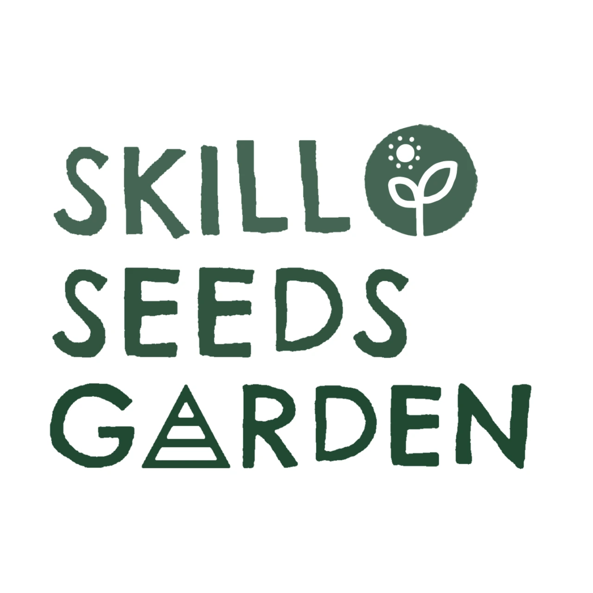
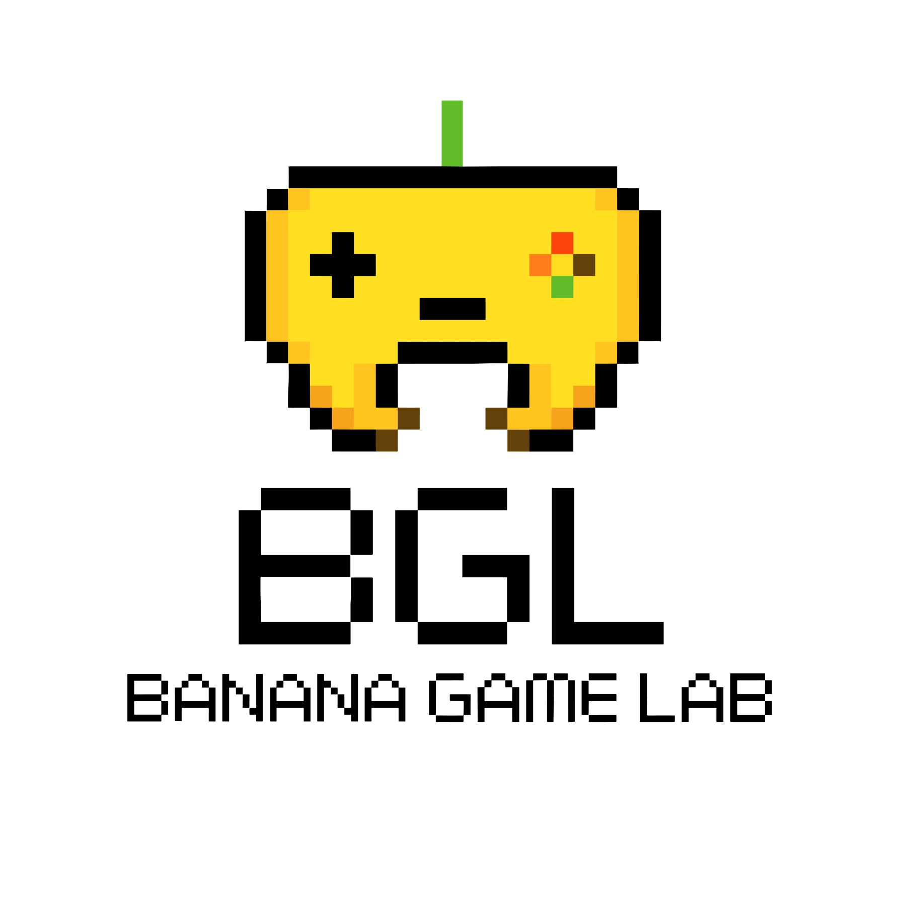
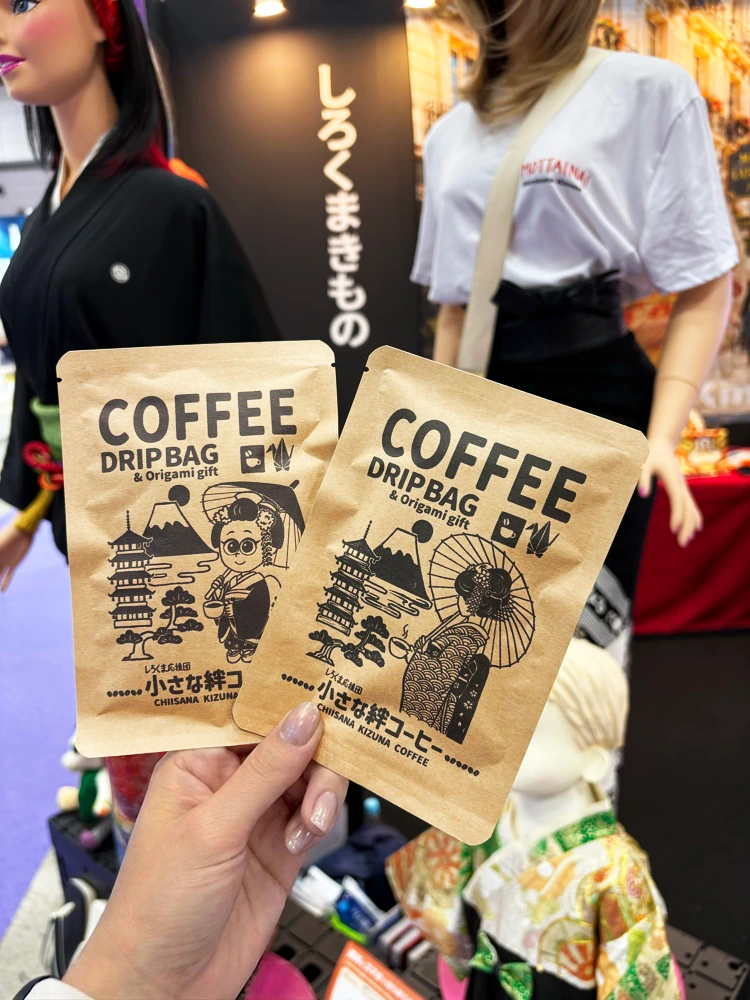
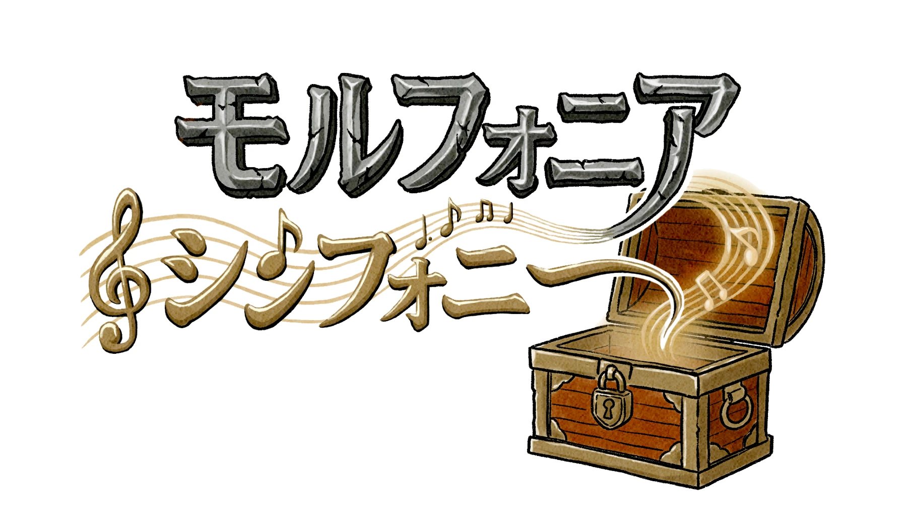
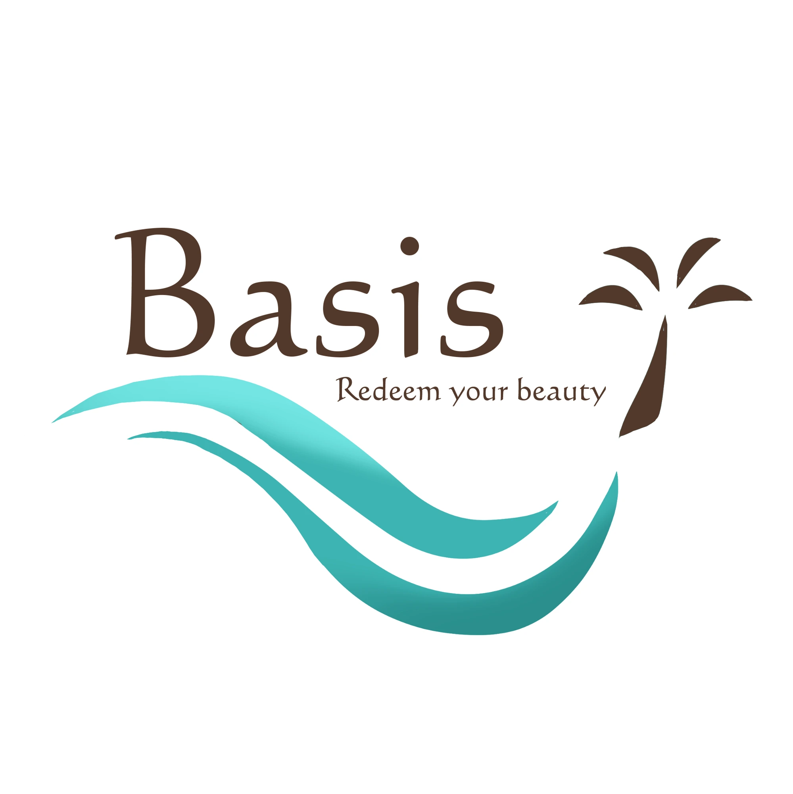
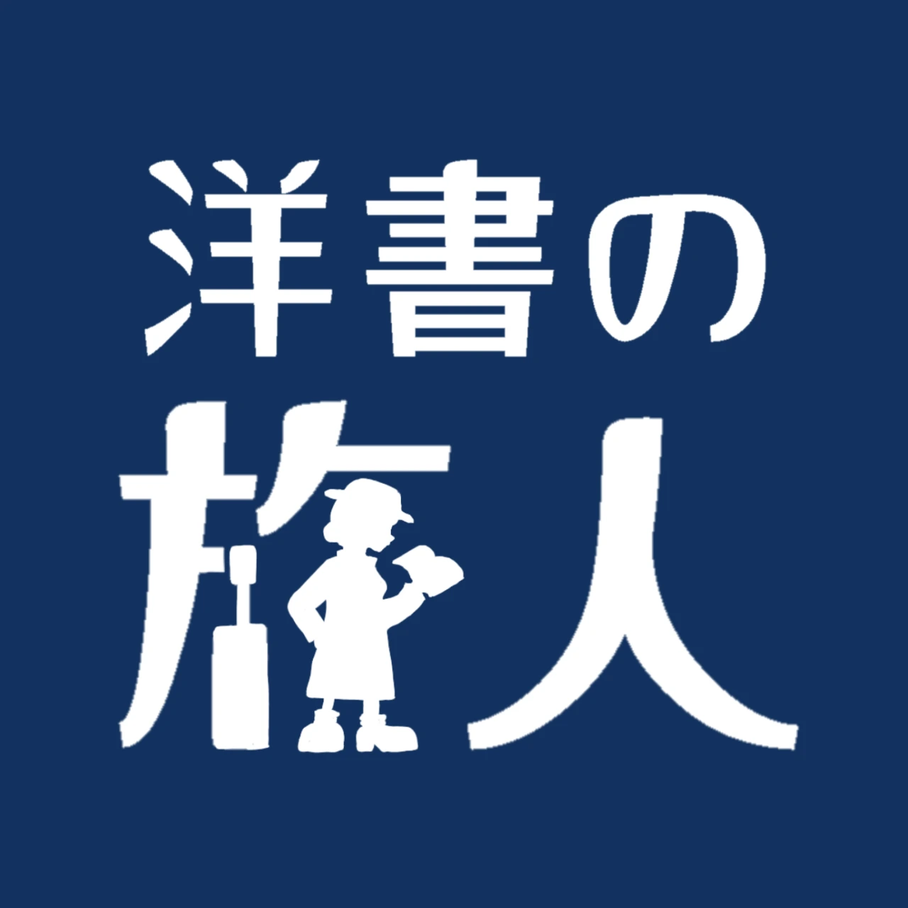

おえかきやさん・ねずみまる 公式ホームページ
汲んで、描いて、すぐ届く。
あたたかくて、ちょっと楽しい。
まんまる寄り目のなかまたちと、
日々の小さな物語を描いています。

ABOUT ME
ねずみまる
げっ歯目似の絵描き・ねずみまるです。
寄り目が特徴のキャラクターを描きます。
挿絵・漫画・間違い探し・アイコン・似顔絵・ロゴ・名刺・人物デフォルメなど。
ご依頼主さまの気持ちを汲んで、はやく描きあげるのが持ち味です。
CHARACTER DESIGN
キャラクター制作
コミュニティやブランドの想いを、親しみのあるキャラクターに。

ねずみのちょろり
ちょろりとちゃまるの、ちいさくて楽しい毎日。キャラクター紹介や、まちがいさがし、ゲームも。

いただきますプリンセス
食べものの国のお姫様と、お供のねずみたち。10組のキャラクターをご紹介します。

ばなこんちゃん
バナナをモチーフにした、BGLのキャラクター。ゲームや季節を楽しむ姿をご紹介します。

CORYUのキャラクター
オンラインコミュニティCORYUのキャラクターデザイン。４種類のポーズをご紹介します。

クォッカ
「くぉっか日和」のキャラクター。表情や向きの違い、漫画への展開をご紹介します。

ヴァニラ姫
キャラクターイラストと、正面・側面・背面の設定画。

どらやきチャン
どらやきをモチーフにしたキャラクター。仲間たちと、表情や角度のバリエーション。

季節のキャラクター
花や葉、雪のモチーフと色で表現した、季節のキャラクターシリーズ。
PORTRAIT ILLUSTRATION
似顔絵制作
その人らしさを、親しみのある一枚に。アイコンにも、大切な人との思い出にも。


ILLUSTRATION
イラスト作品
季節をめぐる、12枚のイラスト。


LOGO & DESIGN
ロゴ・デザインの制作実績

ねずみまるのロゴ
個人活動用に制作したロゴ。パレットや黒板、キャラクターを組み合わせ、親しみのあるイラストの世界観を表現しています。
CORYU ロゴ・キャラクター
オンラインコミュニティのロゴとキャラクターを制作。花のモチーフを取り入れたロゴと、キャラクターを組み合わせたパスへの展開例です。

SKILL SEEDS GARDEN ロゴ
Discordグループのロゴを制作。文字と芽を思わせるシンボルを組み合わせ、グリーンと白の配色で展開しています。

BANANA GAME LAB ロゴ
オンラインゲーム制作コミュニティのロゴを制作。ゲームコントローラーを思わせるマークとドット表現を使い、縦組み・横組み・単色版へ展開しています。
企業向けロゴ
企業からのご依頼で制作したロゴ。円形のオレンジ色のモチーフと青色の数字を組み合わせています。

しろくま応援団 コーヒーパッケージ
コーヒーのパッケージデザインを担当。文字とイラストを組み合わせた、完成品の写真を紹介します。

モルフォニアシンフォニー
イベントのロゴ・告知ビジュアル制作。

リラクゼーション店のロゴ
リラクゼーションのお店のロゴ制作。

洋書の旅人
YouTubeチャンネルのロゴ制作。
WEB DESIGN
ホームページ制作実績

株式会社アルガ 様
CORPORATE WEBSITE
金属工事・建具工事の設計施工を手がける企業のホームページ。事業内容、採用情報、会社情報、お問い合わせをまとめたサイトです。
制作実績として、トップ画面と事業紹介の画面をご紹介します。
制作サイトを見る事業紹介の画面を見る

COMICS & GAME ART
漫画・ゲームの世界


FOLLOW & LINKS
絵と、日々のこと。
新しい作品や活動は、こちらから。
LET’S CREATE TOGETHER
想いをかたちにする、
お手伝いをします。
キャラクター・似顔絵・イラスト・デザイン。
まずは、お話を聞かせてください。